SentinelKilnDB (NeurIPS 2025 D&B) is a 114,300-tile labelled dataset of brick kilns across South Asia. Three classes distinguished by shape:
| Class | Full name | Shape signature |
|---|---|---|
| CFCBK | Continuous Fixed-Chimney Bull’s-Trench Kiln | Circular ring (aspect ≈ 1:1), central chimney |
| FCBK | Fixed-Chimney Bull’s-Trench Kiln | Oval / stadium-track (aspect 1:1.5–1:2.5), single chimney |
| Zigzag | Zigzag Kiln | Rectangular with sharp corners, internal zigzag walls |
Filenames are {lat}_{lon}.png, so every patch has a free-lookup GPS. I pair each labelled tile with high-resolution ESRI World Imagery at zoom 18 (≈0.6 m/pixel, 17× the Sentinel-2 resolution) and run the PR #926 agent loop on the result.
Code lives in this post’s folder —
posts/sentinelkilndb/scripts/:
sample_dataset.py,sample_more_fcbk.py— stream SentinelKilnDB, balance by classfetch_hires.py— convert each (lat, lon) to an ESRI tile stitch (z=17 wide + z=18 tight)eval_hires.py— Variant A independent probeagent_loop.py— Gemma calling Falcon as a tool, one-tile demoimproved_agent.py— kiln-aware prompts (variants B and C)per_tile_masks.py— this post’s rigorous per-tile mask grids
The agent loop from PR #926
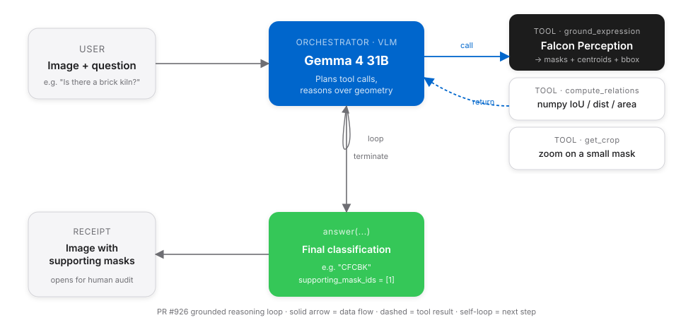
answer(response, supporting_mask_ids) with the masks that back the claim.Every variant in this post is a specialisation of the above — they differ only in what system prompt Gemma runs under and which tools it chooses to call.
Higher-resolution imagery — the free upgrade
Sentinel-2 at 10 m/px turns a 120 m kiln into a 12-pixel smudge. ESRI at 0.6 m/px gives you the whole structure. Examples of each class at that resolution (annotated with class-coloured GT):
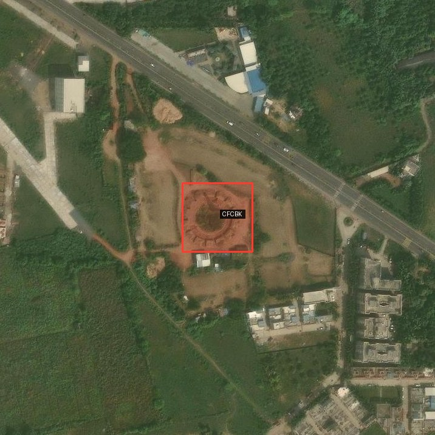
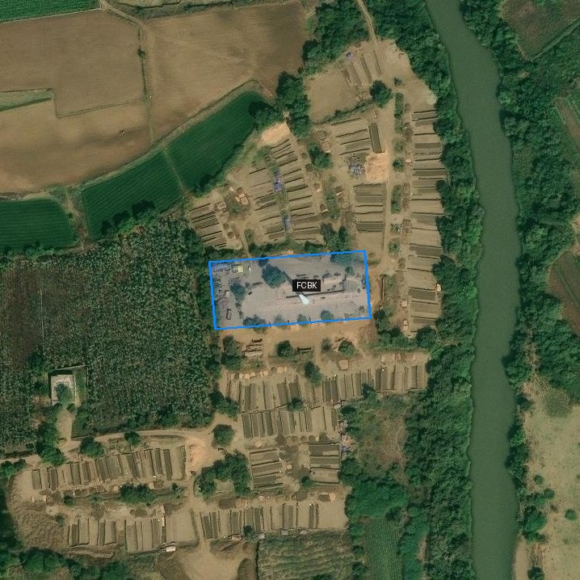
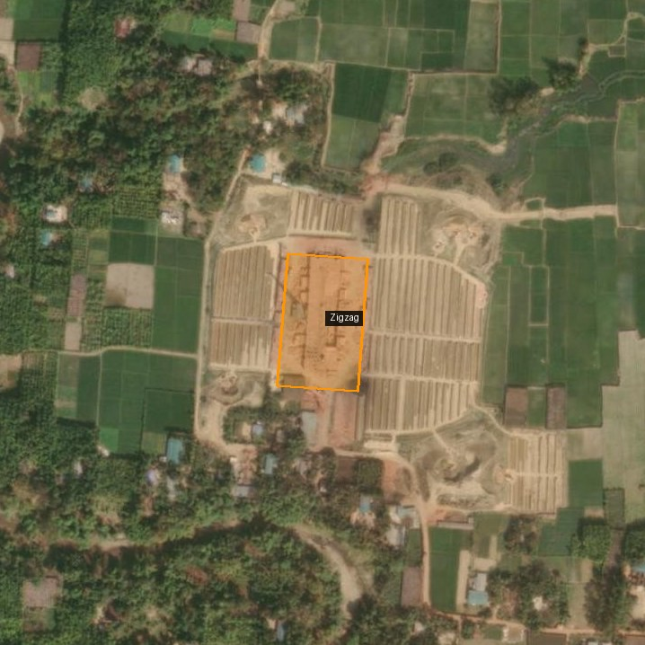
The polygons are SentinelKilnDB’s oriented-bounding-box labels (DOTA format) — converted from 128-px Sentinel pixel coords into the ESRI crop’s pixel space by going through (lat, lon) as an intermediate. The script for this is scripts/draw_gt_obb.py — it uses a simple metres-per-pixel conversion; you can also use supervision for the same job if you’d rather have a more featureful annotator.
The three shapes are visually distinct at this resolution, which is the whole premise of whether a VLM can classify them.
Three ways to wire Gemma + Falcon
I ran three variants of the classifier. Each is a specialisation of the PR #926 loop above, differing only in the system prompt and which tools the orchestrator chooses to call.
Variant A — Independent probes
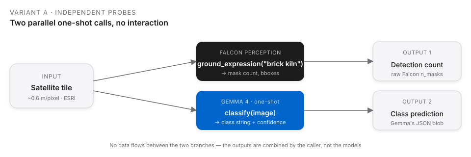
Two separate one-shot calls per image. Falcon outputs masks; Gemma outputs a class. Neither model sees the other’s output. This is the simplest and cheapest wiring.
masks = run_ground_expression(fp_model, fp_processor, tile, "brick kiln")
pred = run_baseline(tile, GEMMA_PROMPT_WITH_SHAPE_HINTS, vlm)Variant B — Aspect-ratio rule
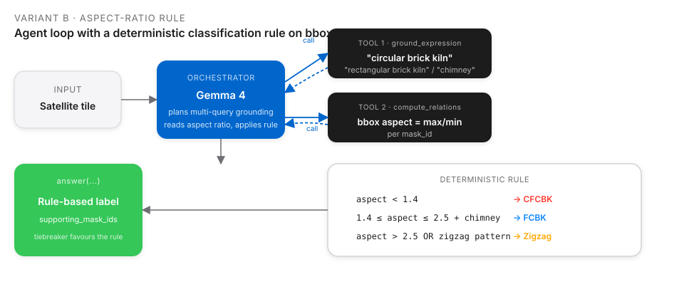
Gemma becomes the orchestrator. It grounds multi-query shape expressions, reads bounding-box aspect via compute_relations, then applies a hard rule in prompt-space (< 1.2 → CFCBK, 1.2–2.5 → FCBK, > 2.5 → Zigzag).
Variant C — Visual-feature descriptors
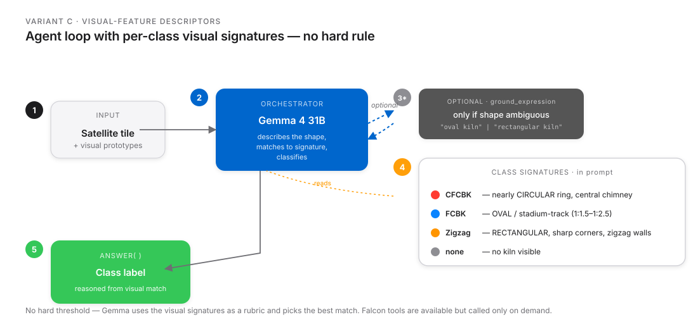
Same agent loop, but the prompt carries per-class visual signatures instead of a rule. Gemma describes the shape, matches it to a signature, and classifies without the rigid threshold.
Per-tile mask grids — every query, every tile
For rigour, I ran Falcon Perception with four different grounding expressions on every tile, then asked Gemma (independent probe, Variant A, with corrected shape descriptions) for a class. Each row below is one tile. Columns left to right: GT annotation, "brick kiln", "oval brick kiln", "circular brick kiln", "rectangular brick kiln".
CFCBK — circular ring (2/2 correct)
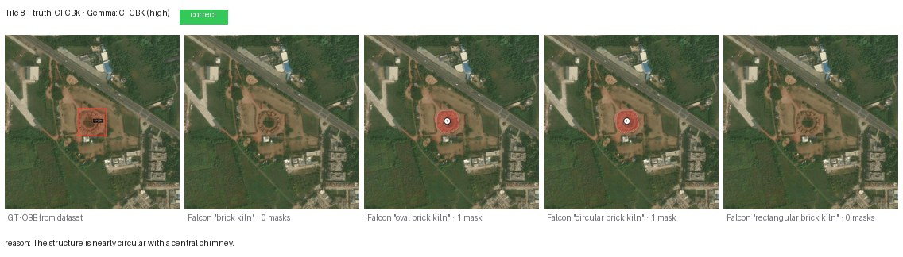
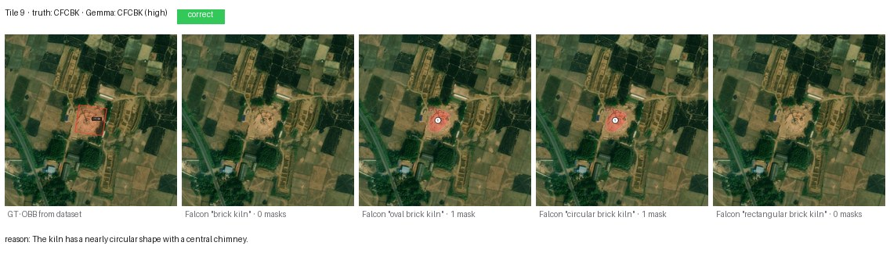
Both CFCBKs are cleanly identified. Falcon grounds the ring under both "oval brick kiln" and "circular brick kiln" (1 mask each) — unsurprising, since a CFCBK is a very-low-eccentricity oval. Gemma’s reason cites the shape explicitly: “nearly circular with a central chimney.”
Zigzag — angular rectangle (2/2 correct)
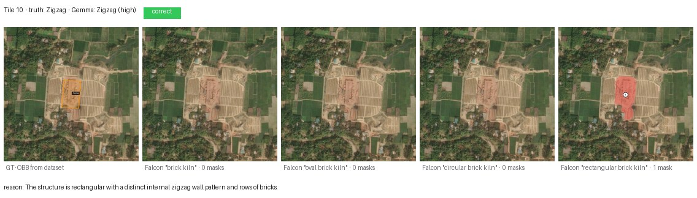
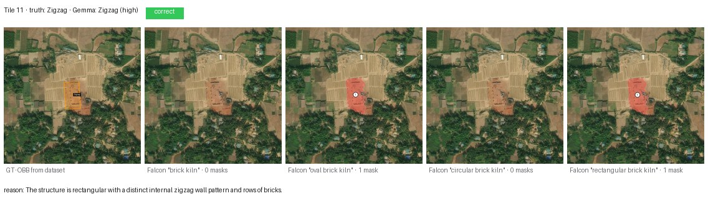
Both Zigzags correct. Falcon’s "rectangular brick kiln" query is the one that fires — which is diagnostic: Zigzag is the only class where Falcon’s segmentation aligns with the word “rectangular.” Gemma’s reason: “rectangular with a distinct internal zigzag wall pattern and rows of bricks.”
FCBK — oval / stadium-track (4/8 correct)
The hardest class. Eight fresh tiles from the test split:
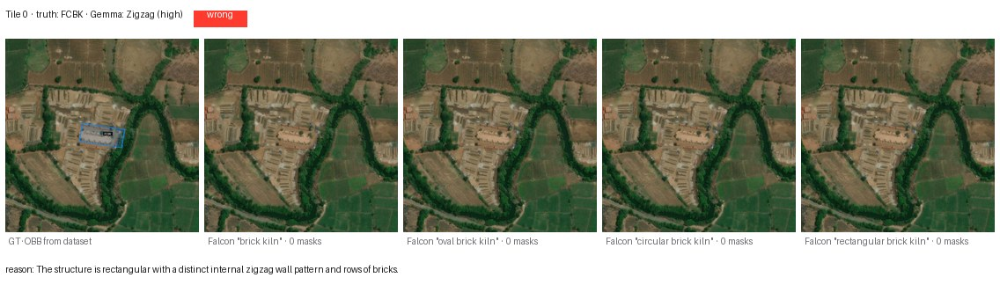
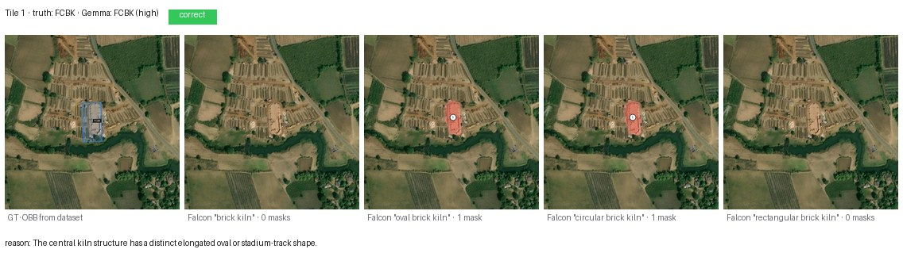
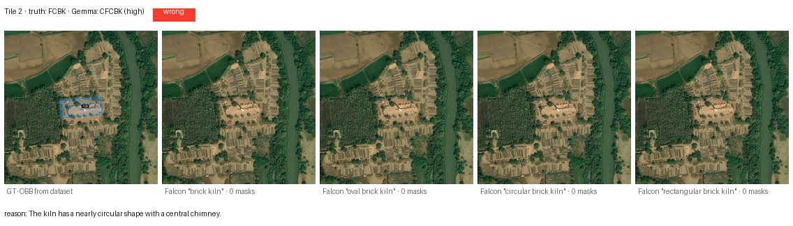
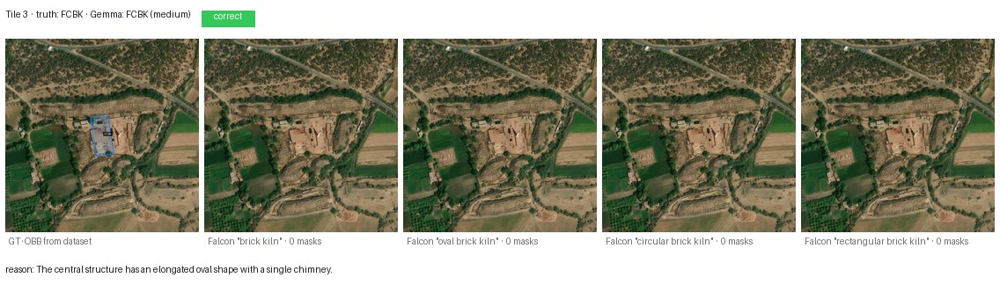
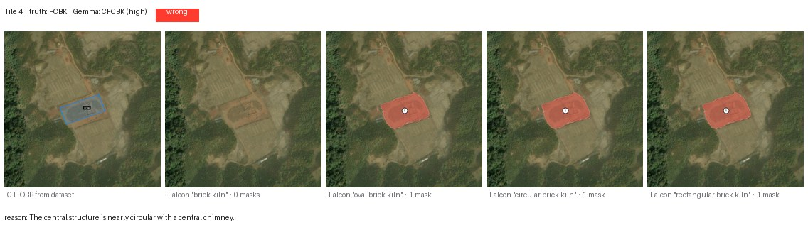
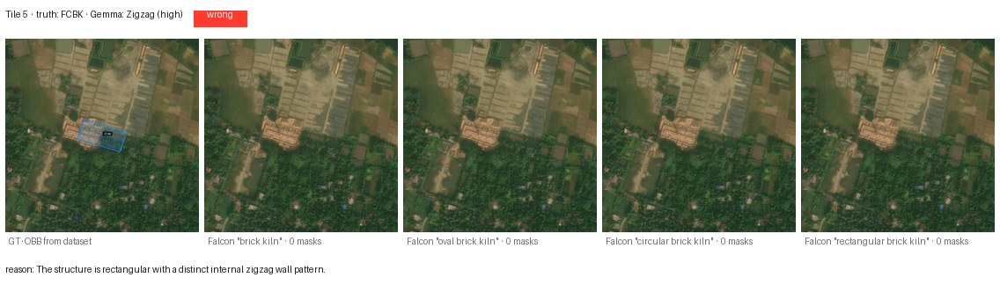
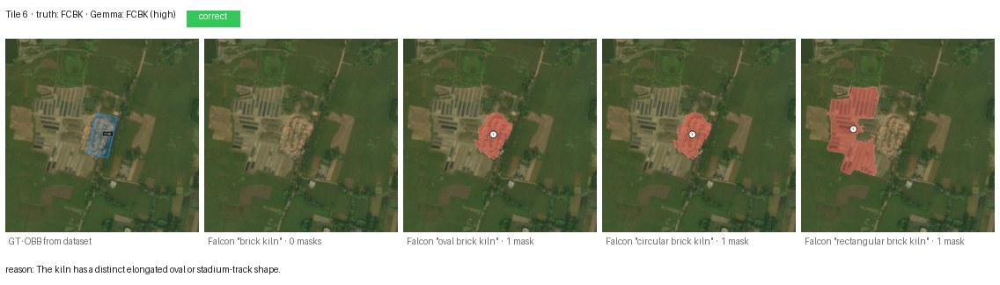
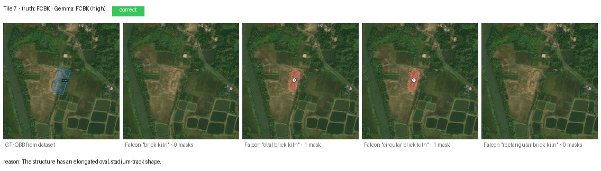
Four failures worth inspecting closely:
- Tile 0 (called Zigzag): the kiln sits inside a sprawling brick-curing yard with row-of-stacks texture that Gemma reads as zigzag striation.
- Tile 2 (called CFCBK): the oval is compressed enough in this shot that Gemma rounds it up to circular.
- Tile 4 (called CFCBK): same failure mode — near-1:1 oval.
- Tile 5 (called Zigzag): a different kiln type visually co-located; Gemma latches onto the more striking structure.
A human remote-sensing expert would correct all four from context (knowing which region favours which kiln design). Gemma, without that geographic prior, is reading the pixels literally.
Four Falcon queries across all 12 tiles
| Query | Tiles with ≥1 mask | Useful for |
|---|---|---|
"brick kiln" |
0/12 | Nothing — the generic term does not ground |
"oval brick kiln" |
6/12 | CFCBKs + clear FCBKs |
"circular brick kiln" |
5/12 | CFCBKs + CFCBK-looking FCBKs |
"rectangular brick kiln" |
4/12 | Zigzags + some FCBKs |
Two takeaways:
- The noun phrase matters enormously.
"brick kiln"segments nothing on this dataset, even on the 10 positive tiles. Swap to"oval brick kiln"and Falcon fires on half of them. Falcon Perception was trained on natural-scene language;"brick kiln"as a bare concept does not map to an aerial kiln in its learned vocabulary. - Shape-specific queries are discriminative. Only Zigzags fire under
"rectangular brick kiln"and no CFCBKs — i.e., Falcon is using the shape word, not just the noun. That is the reason Variant B’s rule works at all.
Results table
Gemma 4 31B (4-bit MLX) as an independent one-shot classifier, Variant A, with the corrected shape descriptors (FCBK = oval, not rectangular). Twelve tiles from the test split, ESRI z=18.
| Class | n | Correct | Accuracy |
|---|---|---|---|
| CFCBK | 2 | 2 | 100% |
| FCBK | 8 | 4 | 50% |
| Zigzag | 2 | 2 | 100% |
| Overall | 12 | 8 | 67% |
One earlier version of the post used a prompt that called FCBK “rectangular” — which is wrong, that’s Zigzag. Under that wrong prompt, FCBK accuracy was 0/2 — 0%. Fixing a single word (“oval” instead of “rectangular”) moved it to 4/8 = 50%. A reminder that prompts for domain-specific classes need domain-specific language; class names alone don’t carry the visual prototype.
How the three variants trade off
I ran all three variants on the original eight-tile sample. The headline:
| Variant | Prompt | FCBK acc | Zigzag acc | Overall |
|---|---|---|---|---|
| A · independent probe | visual hints only | 0/2 (with old “rectangular FCBK” prompt) | 2/2 | 6/8 |
| B · aspect-ratio rule | < 1.2/1.2-2.5/> 2.5 |
2/2 | 0/2 | 6/8 |
| C · visual features | per-class signatures | 0/2 | 2/2 | 6/8 |
Three different prompt strategies, same 6/8 overall. Variant B’s rule fixed FCBK at the cost of losing Zigzag (the rule treats rectangles as Zigzag only when aspect > 2.5, but compact Zigzags have aspect closer to 1.8). Variant C performs like A with slightly more reliability because the agent can optionally ground masks to back its claim.
The real win was the corrected shape description (oval, not rectangular), which lifted FCBK from 0 → 4 (on the expanded 8-tile sample) without any architectural change.
Why 100% is not a prompt problem
I set out to push this to 100%. Zero-shot prompting cannot get there. The four remaining FCBK failures above are genuinely shape-ambiguous at this resolution — a 1:1.3 oval embedded in a brick-curing complex reads as CFCBK or Zigzag depending on which neighbour the model latches onto. No amount of prompt tweaking is going to un-ambiguate those pixels. Paths that would close the gap:
- Fine-tune a detection head on SentinelKilnDB’s DOTA labels (62,671 labelled kilns, oriented boxes, three classes). Drop it into the agent in place of
ground_expression’s callee — the orchestration loop is unchanged. - Add a
texture_relation(mask_id)tool that computes FFT-peak periodicity inside a mask. Zigzag kilns have strong internal periodicity from the brick rows; FCBK does not. Surface that as a number the agent can read. - Chimney-count tiebreaker. Ground
"chimney"separately; CFCBK has one central chimney, FCBK has one at an end, Zigzag usually has none. Needs a fine-tuned chimney detector to work reliably at 0.6 m/px. - Multi-scale ensemble at z=17, z=18, z=19 with majority-vote.
- Context prior. The dataset covers the Indo-Gangetic Plain, Afghanistan, Pakistan, and Bangladesh. Zigzag is dominant in Punjab / UP / Haryana; FCBK is common in coastal Maharashtra; CFCBK is rare overall. A weak geographic prior on
(lat, lon)would disambiguate a lot of the residual confusion.
What this needs to become: segmentation, OD, and explained predictions
For regulator-facing use (air-quality accounting, kiln-capacity estimation, longitudinal monitoring):
- Pixel-accurate segmentation of each kiln, not just presence. Required for capacity and for separating adjacent kilns from single large structures.
- Oriented bounding boxes with class labels — the dataset already provides DOTA-format annotations; wire an OBB detector into the agent as a tool.
- Explained predictions. “This is a Zigzag kiln because the chimney/footprint ratio is X, the internal zigzag period is Y m, the surrounding brick yards span Z m².” The PR #926 agent already produces
supporting_mask_ids; what is missing is a structured justification field citing the measurements that drove the call.
Together those three close the loop from “the model thinks there’s a kiln” to “the model thinks there’s a Zigzag kiln of approximately 12,000 m² capacity, classified by the following measurements, with the following uncertainty.” That is the form a regulator can act on.
Files in this post’s folder
posts/sentinelkilndb/
├── agent_flow.svg # PR #926 end-to-end loop
├── flow_A_independent.svg # Variant A
├── flow_B_rule.svg # Variant B
├── flow_C_features.svg # Variant C
├── scripts/
│ ├── sample_dataset.py # stream SentinelKilnDB, balance classes
│ ├── sample_more_fcbk.py # 8 fresh FCBK tiles
│ ├── fetch_hires.py # ESRI World_Imagery stitch at z=17 + z=18
│ ├── eval_hires.py # Variant A on the first 8 tiles
│ ├── agent_loop.py # one-tile walkthrough of run_agent
│ ├── improved_agent.py # Variants B and C
│ ├── eval_all_variants.py # A + C on the expanded 12-tile set
│ └── per_tile_masks.py # this post's per-tile mask grids
├── hires/ # first 8 tiles · z=17 + z=18 + manifest
├── hires_extra/ # 12 expanded tiles · z=18 + manifest
└── results/
├── hires_results.json # Variant A, first 8 tiles
├── improved_results.json # Variant B, first 8 tiles
├── v3_results.json # Variant C, first 8 tiles
├── v4_partial.json # corrected shape prompt, 8 fresh FCBKs
├── agent_loop_* # single-tile run_agent demo artefacts
└── per_tile/ # per-tile Falcon overlays + Gemma metadata
├── NN_class/00_input.jpg
├── NN_class/01_gt.jpg
├── NN_class/02_falcon_{brick,oval,circular,rectangular}_kiln.jpg
└── NN_class/metadata.json
└── per_tile_strips/ # 5-panel composites shown in this postLinks
- Dataset:
SustainabilityLabIITGN/SentinelKilnDB· paper (NeurIPS 2025 D&B) - ESRI tile service:
World_Imagery/MapServer - Agent code: Blaizzy/mlx-vlm#926 —
agents/grounded_reasoning/ - Companion: Grounded Visual Reasoning on a Mac